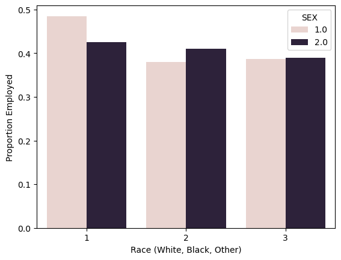

Predicting employment status in Missouri on the basis of demographics
Author
Ryan Mauney
Published
March 12, 2024
Abstract
Data Preparation and Package Installation
Loading the ACS data from Missouri and selecting the features we want to train on.
import warningswarnings.filterwarnings('ignore')from folktables import ACSDataSource, ACSEmployment, BasicProblem, adult_filterimport numpy as npSTATE ="MO"data_source = ACSDataSource(survey_year='2018', horizon='1-Year', survey='person')acs_data = data_source.get_data(states=[STATE], download=True)acs_data.head()# filte the data to only use recommended featurespossible_features=['AGEP', 'SCHL', 'MAR', 'RELP', 'DIS', 'ESP', 'CIT', 'MIG', 'MIL', 'ANC', 'NATIVITY', 'DEAR', 'DEYE', 'DREM', 'SEX', 'RAC1P', 'ESR']acs_data[possible_features].head()
AGEP
SCHL
MAR
RELP
DIS
ESP
CIT
MIG
MIL
ANC
NATIVITY
DEAR
DEYE
DREM
SEX
RAC1P
ESR
0
27
17.0
5
16
2
NaN
1
3.0
4.0
4
1
2
2
2.0
2
1
6.0
1
42
19.0
5
16
2
NaN
1
3.0
4.0
1
1
2
2
2.0
1
2
6.0
2
20
19.0
5
17
2
NaN
1
1.0
4.0
2
1
2
2
2.0
1
1
1.0
3
26
17.0
5
16
1
NaN
1
1.0
4.0
1
1
2
2
1.0
1
2
6.0
4
37
16.0
5
16
1
NaN
1
3.0
4.0
1
1
2
1
1.0
1
2
6.0
Transforming the features into a basic problem to address the task of predicting employment status while excluding race as a demographic.
# subset the features we want to usefeatures_to_use = [f for f in possible_features if f notin ["ESR", "RAC1P"]]# construct a basic problem to predict employment status without considering raceEmploymentProblem = BasicProblem( features=features_to_use, target='ESR', target_transform=lambda x: x ==1, group='RAC1P', preprocess=lambda x: x, postprocess=lambda x: np.nan_to_num(x, -1),)# separate into a feature matrix, label vector, and a group label vectorfeatures, label, group = EmploymentProblem.df_to_numpy(acs_data)
First lets look at the basic model accuracy both as a whole and across racial groups at predicting employment status.
# pull predictions from the modely_hat = model.predict(X_test)# assess the model's overall predicitve accuracyprint("The overall testing accuracy is: "+str((y_hat == y_test).mean()))# asses the model's predictive accuracy for white individualsprint("The testing accuracy for whites is: "+str((y_hat == y_test)[group_test ==1].mean()))# assess the model's predicitve accuracy for black individualsprint("The testing accuracy for blacks is: "+str((y_hat == y_test)[group_test ==2].mean()))
The overall testing accuracy is: 0.7864466517141941
The testing accuracy for whites is: 0.7861923535344274
The testing accuracy for blacks is: 0.7830290010741139
From a basic predictive accuracy standpoint, the model predicts both white and black individual’s to be employed at an about the same rate, which is also approximately equivalent to the overall predictive rate. Lets now look at some basic descriptives.
import pandas as pdimport seaborn as sns# convert the data back into a dataframe to make it easier to work withdf = pd.DataFrame(X_train, columns = features_to_use)df["group"] = group_traindf["label"] = y_train# how many individuals are there in the dataprint("There are "+str(len(df)) +" individuals in the dataset \n")# how many individuals are currently employedprint("There are "+str(len(df[df["label"] ==1])) +" individuals in the dataset are currently employed \n")# how many individuals in each groupprint("The number of individuals in each group: ")print(df.groupby("group").size())# proportion of individuals in each group that are currently employedprint("\nThe proportion of individuals in each group that are currently employed: ")print(df.groupby("group")["label"].mean())# lets now add sex to the consideration of race and proportion predicted to be employedtemp = df.copy()temp["group"][temp["group"] >2] =3ax = sns.barplot(data = temp, x ="group", y ="label", hue ="SEX", errorbar =None)ax.set_xlabel("Race (White, Black, Other)")ax.set_ylabel("Proportion Employed")
There are 49932 individuals in the dataset
There are 22306 individuals in the dataset are currently employed
The number of individuals in each group:
group
1 43713
2 3838
3 150
4 5
5 27
6 762
7 51
8 316
9 1070
dtype: int64
The proportion of individuals in each group that are currently employed:
group
1 0.454396
2 0.395779
3 0.460000
4 0.600000
5 0.407407
6 0.493438
7 0.529412
8 0.373418
9 0.299065
Name: label, dtype: float64
Text(0, 0.5, 'Proportion Employed')

While there is some variance across sex and race in the employment rate, for the most part the employment rate is approximately equal across all groups. Although both white females and males are more employed more than any other subgroup.
Training a Model
Lets train a model using a decision tree classifier with an optimal model complexity. Select model complexity based on the complexity that gets the higest accuracy and the lowest standard deviation.
from sklearn.tree import DecisionTreeClassifierfrom sklearn.pipeline import make_pipelinefrom sklearn.preprocessing import StandardScalerfrom sklearn.metrics import confusion_matrix# assess 50 model complexitiescomplexity = []for i inrange(1, 50, 1):# fit a model with the given complexity m = DecisionTreeClassifier(max_depth = i) m.fit(X_train, y_train)# assess accuracy test_hat = m.predict(X_test) test_acc = (test_hat == y_test).mean()# store this result complexity.append((test_acc, i))complexity.sort(reverse =True)print("Purely by accuracy, the best five model complexities are: "+str(complexity[:5]))
Purely by accuracy, the best five model complexities are: [(0.8406760653636655, 7), (0.8403556552387056, 9), (0.8398750400512656, 8), (0.8395546299263057, 10), (0.8393143223325857, 6)]
Assess these models to find which one is most consistent by checking with cross validation.
from sklearn.model_selection import cross_val_score# pull out the top 5 complexitiesbest_complexity = []for comp in complexity: best_complexity.append(comp[1])best_complexity = best_complexity[:5]best_comp =0best_std =float("inf")# assess which of the best complexities has the lowest standard deviation in cross validationfor comp in best_complexity:# fit the model m = DecisionTreeClassifier(max_depth = comp) m.fit(X_train, y_train)# assess cross validation cv_scores = cross_val_score(m, X_train, y_train, cv =5) std = np.std(cv_scores)if std < best_std: best_std = std best_comp = compprint("The model complexity that minimizes standard devition is: "+str(best_comp) +" with a standard deviation of: "+str(best_std))
The model complexity that minimizes standard devition is: 10 with a standard deviation of: 0.003017848065508687